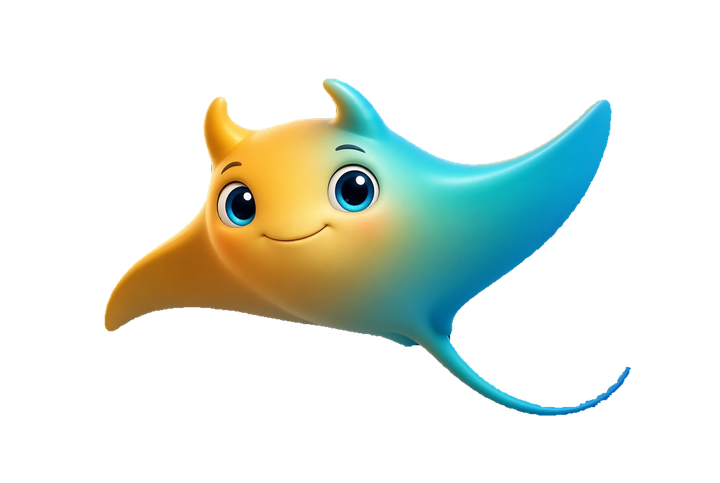

Las dudas razonables
Las que salen en casi todas las primeras reuniones. Mejor responderlas antes de que tengas que pedirlas.
¿Esto no es muy caro para una empresa como la mía?
No hay cuota fija ni contrato largo. Acotamos un proceso, te damos un precio cerrado por escrito y decides tú si hay un segundo paso. Si el número no encaja, ajustamos el alcance, no la calidad.
Si automatizo, ¿qué pasa con mi equipo?
Nada, salvo las tareas mecánicas. En los equipos con los que trabajamos casi nunca sobra gente: sobran horas metidas en trabajo repetitivo. Esas horas son las que liberamos.
No tengo conocimientos técnicos, ¿es un problema?
No. Si lo deseas, te explicamos el proceso paso a paso —qué entra, qué sale y qué pasa si algo falla— sin tecnicismos. Lo dejamos documentado para que tu equipo lo mantenga sin depender de nosotros, y ofrecemos formación tanto para equipos como individual.
¿Y si ya lo llevamos con hojas de cálculo?
Muchas veces las hojas de cálculo son una gran herramienta, y si te funcionan te lo decimos sin rodeos. Pero también se pueden automatizar: conectarlas con tus otras herramientas para que se actualicen solas, sin copiar y pegar. Así, la persona que hoy pica datos a mano puede dedicarse a algo más productivo: revisar y decidir, que es donde más valor aporta. Lo que solemos plantear juntos es qué pasa cuando crece el volumen o cuando la persona que las mantiene coge vacaciones.
¿Dónde acaban mis datos?
En la infraestructura que acordemos contigo, y en ningún otro sitio: no se usan para entrenar modelos externos. Antes de mover un solo dato te enseñamos el recorrido completo.
¿Y si al final no funciona?
Paras ahí, sin coste añadido. Por eso el primer paso es pequeño: nada de infraestructura enorme ni compromiso a años. Es la forma que hemos encontrado de que probar salga barato.
¿Formáis al equipo o solo instaláis la solución?
Ambas cosas son un servicio y se pueden contratar por separado. A veces una implementación no basta: el equipo necesita formación para saber usarla y sacarle partido. Por eso ofrecemos formación, para equipos o individual, y dejamos documentación clara para que todo siga funcionando cuando no estemos.
¿Con qué herramientas trabajáis?
Modelos seguros de Anthropic o Google, automatizaciones con agentes IA, n8n y Claude. Power BI para los datos. Las bases de datos se guardan de forma segura y todo corre en un servidor VPS. Siempre elegimos lo que ya encaja en vuestra forma de trabajar, no lo que nos resulta más cómodo a nosotros.

¿Queda alguna duda?
Cuéntanos tu caso en una llamada de 20 minutos. Sin compromiso y sin presentaciones de 40 diapositivas.